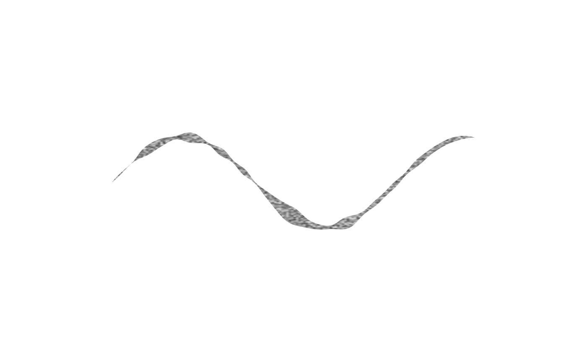
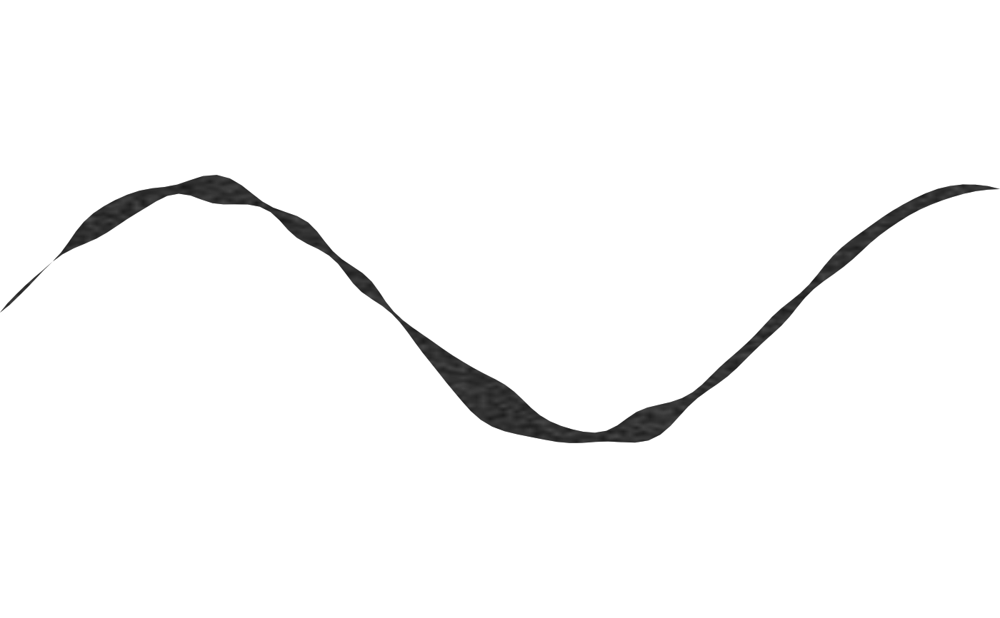
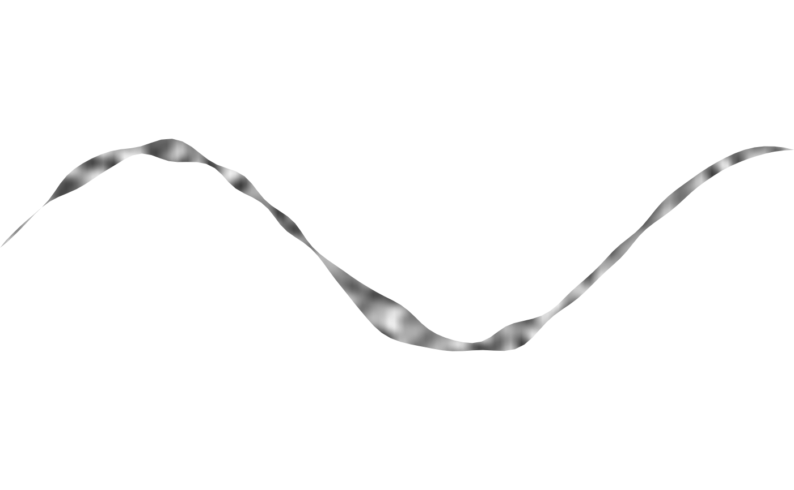

A paper-grain/textured-ink rendering of a drawable's own outline
Source:R/effect_grain.R
effect_grain.Rdeffect_grain takes an existing polygon-geometry drawable (object,
e.g. shape_stroke(), shape_blob(), shape_ribbon()) and renders
its own outline (object@points) not with a style()@fill via the
ordinary draw()/geometry_grob() path, but by compositing a
rasterised paper-grain texture and masking it to the outline's exact
polygon shape via grid::as.mask().
Usage
effect_grain(
object,
grain = noise_field(frequency = 15, octaves = 2L, seed = 2L),
resolution = 150L,
color = "gray15",
alpha = 1,
background = NA_character_
)Arguments
- object
A polygon-geometry drawable (
@geometry == "polygon") whose outline is textured – e.g.shape_stroke(),shape_blob(),shape_ribbon().object@pointsis used directly;object@styleplays no role (effect_grain()draws its own grain raster instead).- grain
A noise_field controlling the paper-grain texture, sampled directly at each raster pixel's own world position (not torus-periodic, unlike
fill_noise()'s tiled field – see Details). Defaultnoise_field(frequency = 15, octaves = 2L, seed = 2L)(finer/denser thannoise_field()'s own default, for a paper-grain rather than cloudy look).- resolution
Raster resolution (pixels per edge of
object's own bounding box). Must be a positive integer of at least2L. Default150L.- color
Grain colour. Default
"gray15".- alpha
Maximum grain opacity, at the noise field's peak. Must be a number in
(0, 1]. Default1.- background
Colour revealed as grain fades out, or
NAfor true transparency (showing whatever is drawn behind). DefaultNA.
Details
This is the same masking technique fill_vignette() already uses for
its own radial fade, but applied to object's own real (possibly
concave, tapering-to-a-point) silhouette rather than a synthetic
circle drawn purely to build the mask.
This is a different effect than filling object with
fill_charcoal()/fill_noise() (already a good option for a shape's
interior – see fill_charcoal()'s docs): those tile a periodic
texture that repeats across the shape via grid::pattern(), sized
relative to the target's own bounding box. effect_grain() instead
samples its grain noise_field once, directly, across object's own
world coordinates – a single non-repeating raster the size of the
whole shape, with no tiling seam to manage, at the cost of needing its
own draw() method rather than reusing geometry_grob()'s existing
"polygon"/"path"/"points" branches (effect_grain is not a
drawable subclass at all, since its rendering isn't expressible as a
single points-based grob).
Grain is rendered as varying opacity of color, from fully transparent
at the noise field's minimum to alpha at its maximum – exactly
fill_noise()'s own opacity convention – optionally revealing a solid
background colour underneath (as fill_vignette()'s own background
argument does) rather than true transparency, which reads as a solid,
mottled ink stroke instead of a sparse one.
See also
Other effects:
effect_bristle(),
effect_tremor()
Examples
t <- seq(0, 8, length.out = 150)
template <- shape_stroke(x = t, y = sin(t), width = 0.4)
# before: a plain filled stroke
draw(template)
 # after: the same outline rendered as textured grain instead of a
# solid style() fill
draw(effect_grain(template, color = "gray10", alpha = 0.9))
# after: the same outline rendered as textured grain instead of a
# solid style() fill
draw(effect_grain(template, color = "gray10", alpha = 0.9))

# a non-NA background reveals a solid colour underneath the grain,
# instead of true transparency
draw(effect_grain(template, color = "gray5", alpha = 0.85, background = "gray30"))

# a coarser grain field (lower frequency) reads less like paper texture
# and more like a mottled brushstroke
draw(effect_grain(template, grain = noise_field(frequency = 3, seed = 2L)))
